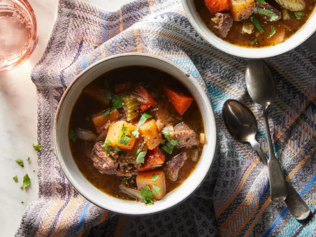

Home
Rutabaga Beef Stew

Description
Rutabagas and beef chuck roast make this stew a hearty and comforting main dish any night of the week.
Ingredients
- 1 pound boneless beef chuck roast, trimmed
- 2 tablespoons all-purpose flour
- ½ teaspoon salt
- ½ teaspoon ground black pepper
- 2 tablespoons vegetable oil
- ½ cup dry red wine (Optional)
- 3 cups low-sodium beef broth
- 2 cups cubed rutabaga
- 1 medium onion, cut into thin wedges
- 4 carrots, cut diagonally into 1-inch pieces
- ½ cup thinly sliced celery
- 4 cloves garlic, minced
- 2 bay leaves
- 2 teaspoons herbes de Provence